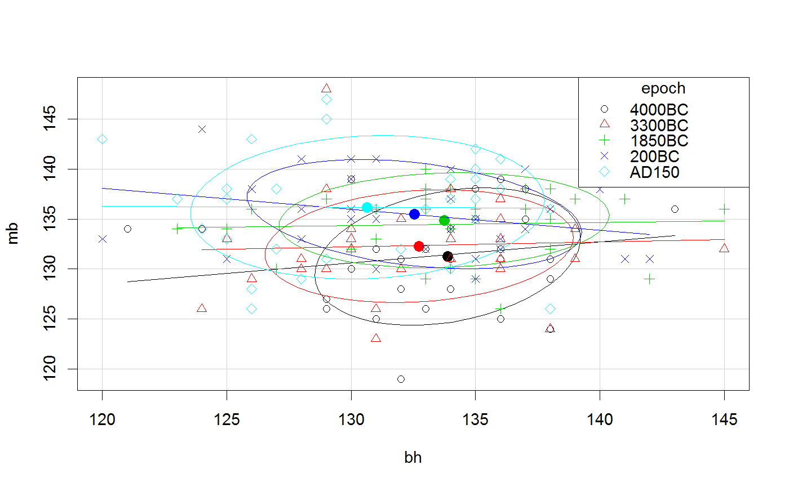
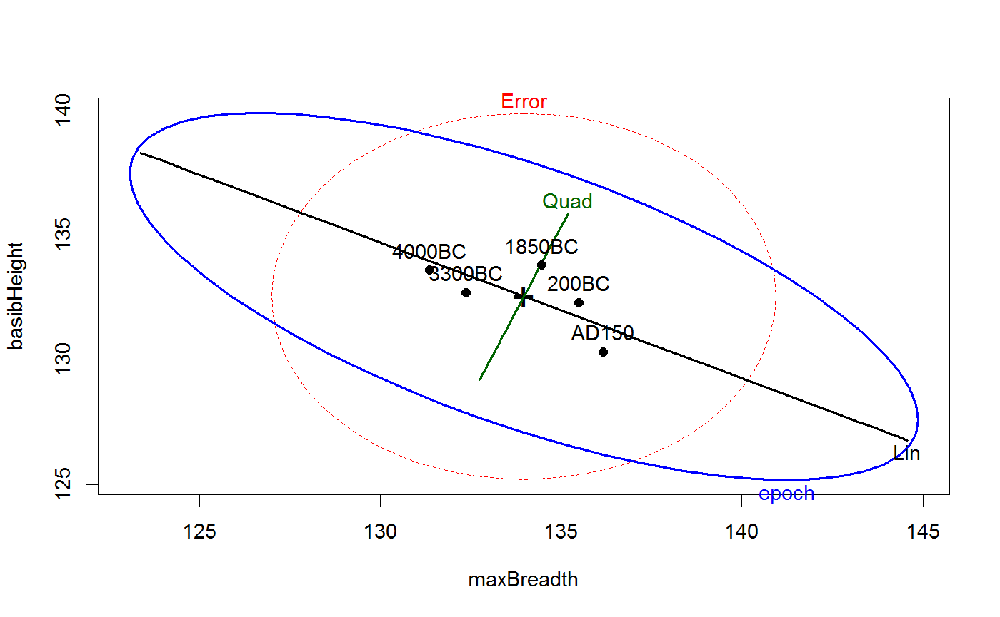
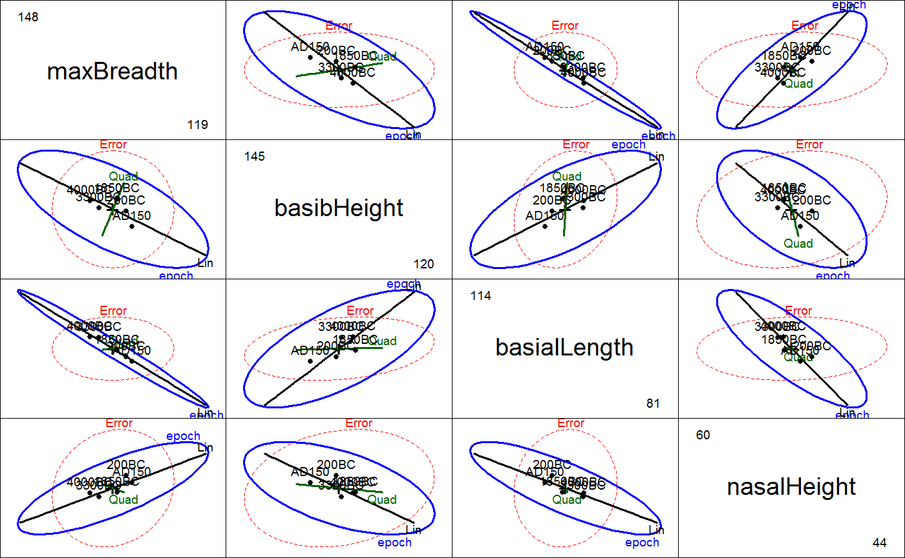

<!-- Generated by pkgdown: do not edit by hand -->
<!DOCTYPE html>
<html>
  <head>
  <meta charset="utf-8">
<meta http-equiv="X-UA-Compatible" content="IE=edge">
<meta name="viewport" content="width=device-width, initial-scale=1.0">

<title>Egyptian Skulls — Skulls • heplots</title>

<!-- jquery -->
<script src="https://code.jquery.com/jquery-3.1.0.min.js" integrity="sha384-nrOSfDHtoPMzJHjVTdCopGqIqeYETSXhZDFyniQ8ZHcVy08QesyHcnOUpMpqnmWq" crossorigin="anonymous"></script>
<!-- Bootstrap -->
<link href="https://maxcdn.bootstrapcdn.com/bootswatch/3.3.7/cerulean/bootstrap.min.css" rel="stylesheet" crossorigin="anonymous">

<script src="https://maxcdn.bootstrapcdn.com/bootstrap/3.3.7/js/bootstrap.min.js" integrity="sha384-Tc5IQib027qvyjSMfHjOMaLkfuWVxZxUPnCJA7l2mCWNIpG9mGCD8wGNIcPD7Txa" crossorigin="anonymous"></script>

<!-- Font Awesome icons -->
<link href="https://maxcdn.bootstrapcdn.com/font-awesome/4.6.3/css/font-awesome.min.css" rel="stylesheet" integrity="sha384-T8Gy5hrqNKT+hzMclPo118YTQO6cYprQmhrYwIiQ/3axmI1hQomh7Ud2hPOy8SP1" crossorigin="anonymous">


<!-- pkgdown -->
<link href="../pkgdown.css" rel="stylesheet">
<script src="../jquery.sticky-kit.min.js"></script>
<script src="../pkgdown.js"></script>
  
  
<!-- mathjax -->
<script src='https://mathjax.rstudio.com/latest/MathJax.js?config=TeX-AMS-MML_HTMLorMML'></script>

<!--[if lt IE 9]>
<script src="https://oss.maxcdn.com/html5shiv/3.7.3/html5shiv.min.js"></script>
<script src="https://oss.maxcdn.com/respond/1.4.2/respond.min.js"></script>
<![endif]-->


  </head>

  <body>
    <div class="container template-reference-topic">
      <header>
      <div class="navbar navbar-default navbar-fixed-top" role="navigation">
  <div class="container">
    <div class="navbar-header">
      <button type="button" class="navbar-toggle collapsed" data-toggle="collapse" data-target="#navbar">
        <span class="icon-bar"></span>
        <span class="icon-bar"></span>
        <span class="icon-bar"></span>
      </button>
      <a class="navbar-brand" href="../index.html">heplots</a>
    </div>
    <div id="navbar" class="navbar-collapse collapse">
      <ul class="nav navbar-nav">
        <li>
  <a href="../index.html">
    <span class="fa fa-home fa-lg"></span>
     
  </a>
</li>
<li>
  <a href="../reference/index.html">Reference</a>
</li>
      </ul>
      
      <ul class="nav navbar-nav navbar-right">
        
      </ul>
    </div><!--/.nav-collapse -->
  </div><!--/.container -->
</div><!--/.navbar -->

      
      </header>

      <div class="row">
  <div class="col-md-9 contents">
    <div class="page-header">
    <h1>Egyptian Skulls</h1>
    </div>

    
    

    <p>Measurements made on Egyptian skulls from five epochs.</p>
    

    <pre class="usage"><span class='fu'>data</span>(<span class='st'>"Skulls"</span>)</pre>
        
    <h2 class="hasAnchor" id="format"><a class="anchor" href="#format"></a>Format</h2>

    <p>A data frame with 150 observations on the following 5 variables.</p><dl class='dl-horizontal'>
    <dt><code>epoch</code></dt><dd><p>the epoch the skull as assigned to, 
                        an ordered factor with levels <code>c4000BC</code> <code>c3300BC</code>,
                        <code>c1850BC</code>,  <code>c200BC</code>, and  <code>cAD150</code>,
                        where the years are only given approximately, of
                        course.</p></dd>
    <dt><code>mb</code></dt><dd><p>maximal breadth of the skull.</p></dd>
    <dt><code>bh</code></dt><dd><p>basibregmatic height of the skull.</p></dd>
    <dt><code>bl</code></dt><dd><p>basialveolar length of the skull.</p></dd>
    <dt><code>nh</code></dt><dd><p>nasal height of the skull.</p></dd>
  </dl>
    
    <h2 class="hasAnchor" id="details"><a class="anchor" href="#details"></a>Details</h2>

    
    <p>The epochs correspond to the following periods of Egyptian history:
1 - the early predynastic period (circa 4000 BC);
2 - the late predynastic period (circa 3300 BC);
3 - the 12th and 13th dynasties (circa 1850 BC);
4 - the Ptolemiac period (circa 200 BC);
5 - the Roman period (circa 150 AD).</p>
<p>The question is whether the measurements change over time.
  Non-constant measurements of the skulls over time would indicate
  interbreeding with immigrant populations.</p>
<p>Note that using polynomial contrasts for <code>epoch</code> essentially treats
  the time points as equally spaced.</p>
    
    <h2 class="hasAnchor" id="source"><a class="anchor" href="#source"></a>Source</h2>

    
    <p>D. J. Hand, F. Daly, A. D. Lunn, K. J. McConway and E. Ostrowski (1994).
  <em>A Handbook of Small Datasets</em>, Chapman and Hall/CRC, London.</p>
    
    <h2 class="hasAnchor" id="references"><a class="anchor" href="#references"></a>References</h2>

    <p>Thomson, A. and Randall-Maciver, R. (1905) <em>Ancient Races of the Thebaid</em>, Oxford: Oxford University Press.</p>
<p>Egyptian Skull Development, StatLib Data and Story Library,
  <a href='http://lib.stat.cmu.edu/DASL/Stories/EgyptianSkullDevelopment.html'>http://lib.stat.cmu.edu/DASL/Stories/EgyptianSkullDevelopment.html</a></p>
    

    <h2 class="hasAnchor" id="examples"><a class="anchor" href="#examples"></a>Examples</h2>
    <pre class="examples"><div class='input'><span class='fu'>data</span>(<span class='no'>Skulls</span>)
<span class='co'># make shorter labels for epochs</span>
<span class='no'>Skulls</span>$<span class='no'>epoch</span> <span class='kw'>&lt;-</span> <span class='fu'>factor</span>(<span class='no'>Skulls</span>$<span class='no'>epoch</span>, <span class='kw'>labels</span><span class='kw'>=</span><span class='fu'>sub</span>(<span class='st'>"c"</span>,<span class='st'>""</span>,<span class='fu'>levels</span>(<span class='no'>Skulls</span>$<span class='no'>epoch</span>)))
<span class='co'># variable labels</span>
<span class='no'>vlab</span> <span class='kw'>&lt;-</span> <span class='fu'>c</span>(<span class='st'>"maxBreadth"</span>, <span class='st'>"basibHeight"</span>, <span class='st'>"basialLength"</span>, <span class='st'>"nasalHeight"</span>)

<span class='co'># fit manova model</span>
<span class='no'>sk.mod</span> <span class='kw'>&lt;-</span> <span class='fu'>lm</span>(<span class='fu'>cbind</span>(<span class='no'>mb</span>, <span class='no'>bh</span>, <span class='no'>bl</span>, <span class='no'>nh</span>) ~ <span class='no'>epoch</span>, <span class='kw'>data</span><span class='kw'>=</span><span class='no'>Skulls</span>)

<span class='fu'>Manova</span>(<span class='no'>sk.mod</span>)</div><div class='output co'>#&gt; 
#&gt; Type II MANOVA Tests: Pillai test statistic
#&gt;       Df test stat approx F num Df den Df    Pr(&gt;F)    
#&gt; epoch  4   0.35331    3.512     16    580 4.675e-06 ***
#&gt; ---
#&gt; Signif. codes:  0 <U+0091>***<U+0092> 0.001 <U+0091>**<U+0092> 0.01 <U+0091>*<U+0092> 0.05 <U+0091>.<U+0092> 0.1 <U+0091> <U+0092> 1</div><div class='input'><span class='fu'>summary</span>(<span class='fu'>Manova</span>(<span class='no'>sk.mod</span>))</div><div class='output co'>#&gt; 
#&gt; Type II MANOVA Tests:
#&gt; 
#&gt; Sum of squares and products for error:
#&gt;             mb          bh         bl        nh
#&gt; mb 3061.066667    5.333333   11.46667  291.3000
#&gt; bh    5.333333 3405.266667  754.00000  412.5333
#&gt; bl   11.466667  754.000000 3505.96667  164.3333
#&gt; nh  291.300000  412.533333  164.33333 1472.1333
#&gt; 
#&gt; ------------------------------------------
#&gt;  
#&gt; Term: epoch 
#&gt; 
#&gt; Sum of squares and products for the hypothesis:
#&gt;           mb         bh        bl         nh
#&gt; mb  502.8267 -228.14667 -626.6267  135.43333
#&gt; bh -228.1467  229.90667  292.2800  -66.06667
#&gt; bl -626.6267  292.28000  803.2933 -180.73333
#&gt; nh  135.4333  -66.06667 -180.7333   61.20000
#&gt; 
#&gt; Multivariate Tests: epoch
#&gt;                  Df test stat  approx F num Df   den Df     Pr(&gt;F)    
#&gt; Pillai            4 0.3533056  3.512037     16 580.0000 4.6753e-06 ***
#&gt; Wilks             4 0.6635858  3.900928     16 434.4548 7.0102e-07 ***
#&gt; Hotelling-Lawley  4 0.4818191  4.230974     16 562.0000 8.2782e-08 ***
#&gt; Roy               4 0.4250954 15.409707      4 145.0000 1.5883e-10 ***
#&gt; ---
#&gt; Signif. codes:  0 <U+0091>***<U+0092> 0.001 <U+0091>**<U+0092> 0.01 <U+0091>*<U+0092> 0.05 <U+0091>.<U+0092> 0.1 <U+0091> <U+0092> 1</div><div class='input'>
<span class='co'># test trends over epochs</span>
<span class='fu'>linearHypothesis</span>(<span class='no'>sk.mod</span>, <span class='st'>"epoch.L"</span>) <span class='co'># linear component</span></div><div class='output co'>#&gt; 
#&gt; Sum of squares and products for the hypothesis:
#&gt;           mb        bh        bl      nh
#&gt; mb  486.4133 -264.8533 -606.1067  129.88
#&gt; bh -264.8533  144.2133  330.0267  -70.72
#&gt; bl -606.1067  330.0267  755.2533 -161.84
#&gt; nh  129.8800  -70.7200 -161.8400   34.68
#&gt; 
#&gt; Sum of squares and products for error:
#&gt;             mb          bh         bl        nh
#&gt; mb 3061.066667    5.333333   11.46667  291.3000
#&gt; bh    5.333333 3405.266667  754.00000  412.5333
#&gt; bl   11.466667  754.000000 3505.96667  164.3333
#&gt; nh  291.300000  412.533333  164.33333 1472.1333
#&gt; 
#&gt; Multivariate Tests: 
#&gt;                  Df test stat approx F num Df den Df     Pr(&gt;F)    
#&gt; Pillai            1 0.2913791 14.59731      4    142 5.1953e-10 ***
#&gt; Wilks             1 0.7086209 14.59731      4    142 5.1953e-10 ***
#&gt; Hotelling-Lawley  1 0.4111918 14.59731      4    142 5.1953e-10 ***
#&gt; Roy               1 0.4111918 14.59731      4    142 5.1953e-10 ***
#&gt; ---
#&gt; Signif. codes:  0 <U+0091>***<U+0092> 0.001 <U+0091>**<U+0092> 0.01 <U+0091>*<U+0092> 0.05 <U+0091>.<U+0092> 0.1 <U+0091> <U+0092> 1</div><div class='input'><span class='fu'>linearHypothesis</span>(<span class='no'>sk.mod</span>, <span class='st'>"epoch.Q"</span>) <span class='co'># quadratic component</span></div><div class='output co'>#&gt; 
#&gt; Sum of squares and products for the hypothesis:
#&gt;           mb        bh         bl         nh
#&gt; mb  6.438095 17.580952  1.2380952 -1.7333333
#&gt; bh 17.580952 48.009524  3.3809524 -4.7333333
#&gt; bl  1.238095  3.380952  0.2380952 -0.3333333
#&gt; nh -1.733333 -4.733333 -0.3333333  0.4666667
#&gt; 
#&gt; Sum of squares and products for error:
#&gt;             mb          bh         bl        nh
#&gt; mb 3061.066667    5.333333   11.46667  291.3000
#&gt; bh    5.333333 3405.266667  754.00000  412.5333
#&gt; bl   11.466667  754.000000 3505.96667  164.3333
#&gt; nh  291.300000  412.533333  164.33333 1472.1333
#&gt; 
#&gt; Multivariate Tests: 
#&gt;                  Df test stat  approx F num Df den Df  Pr(&gt;F)
#&gt; Pillai            1 0.0183468 0.6634844      4    142 0.61837
#&gt; Wilks             1 0.9816532 0.6634844      4    142 0.61837
#&gt; Hotelling-Lawley  1 0.0186897 0.6634844      4    142 0.61837
#&gt; Roy               1 0.0186897 0.6634844      4    142 0.61837</div><div class='input'>
<span class='co'># typical scatterplots are not very informative</span>
<span class='fu'>scatterplot</span>(<span class='no'>mb</span> ~ <span class='no'>bh</span><span class='kw'>|</span><span class='no'>epoch</span>, <span class='kw'>data</span><span class='kw'>=</span><span class='no'>Skulls</span>,
            <span class='kw'>ellipse</span><span class='kw'>=</span><span class='fl'>TRUE</span>, <span class='kw'>levels</span><span class='kw'>=</span><span class='fl'>0.68</span>, <span class='kw'>smooth</span><span class='kw'>=</span><span class='fl'>FALSE</span>, <span class='kw'>legend.coords</span><span class='kw'>=</span><span class='st'>"topright"</span>)</div><div class='img'></div><div class='input'><span class='fu'>scatterplot</span>(<span class='no'>mb</span> ~ <span class='no'>bl</span><span class='kw'>|</span><span class='no'>epoch</span>, <span class='kw'>data</span><span class='kw'>=</span><span class='no'>Skulls</span>,
            <span class='kw'>ellipse</span><span class='kw'>=</span><span class='fl'>TRUE</span>, <span class='kw'>levels</span><span class='kw'>=</span><span class='fl'>0.68</span>, <span class='kw'>smooth</span><span class='kw'>=</span><span class='fl'>FALSE</span>, <span class='kw'>legend.coords</span><span class='kw'>=</span><span class='st'>"topright"</span>)</div><div class='img'></div><div class='input'>
<span class='co'># HE plots</span>

<span class='fu'><a href='heplot.html'>heplot</a></span>(<span class='no'>sk.mod</span>, <span class='kw'>hypotheses</span><span class='kw'>=</span><span class='fu'>list</span>(<span class='kw'>Lin</span><span class='kw'>=</span><span class='st'>"epoch.L"</span>, <span class='kw'>Quad</span><span class='kw'>=</span><span class='st'>"epoch.Q"</span>), <span class='kw'>xlab</span><span class='kw'>=</span><span class='no'>vlab</span>[<span class='fl'>1</span>], <span class='kw'>ylab</span><span class='kw'>=</span><span class='no'>vlab</span>[<span class='fl'>2</span>])</div><div class='img'></div><div class='input'><span class='fu'>pairs</span>(<span class='no'>sk.mod</span>, <span class='kw'>hypotheses</span><span class='kw'>=</span><span class='fu'>list</span>(<span class='kw'>Lin</span><span class='kw'>=</span><span class='st'>"epoch.L"</span>, <span class='kw'>Quad</span><span class='kw'>=</span><span class='st'>"epoch.Q"</span>), <span class='kw'>var.labels</span><span class='kw'>=</span><span class='no'>vlab</span>)</div><div class='img'></div><div class='input'>
# 3D plot shows that nearly all of hypothesis variation is linear!
</div><span class='co'># NOT RUN {</span>
<span class='fu'><a href='heplot3d.html'>heplot3d</a></span>(<span class='no'>sk.mod</span>, <span class='kw'>hypotheses</span><span class='kw'>=</span><span class='fu'>list</span>(<span class='kw'>Lin</span><span class='kw'>=</span><span class='st'>"epoch.L"</span>, <span class='kw'>Quad</span><span class='kw'>=</span><span class='st'>"epoch.Q"</span>), <span class='kw'>col</span><span class='kw'>=</span><span class='fu'>c</span>(<span class='st'>"pink"</span>, <span class='st'>"blue"</span>))

<span class='co'># view in canonical space</span>
<span class='kw'>if</span> (<span class='fu'>require</span>(<span class='no'>candisc</span>)) {
        <span class='no'>sk.can</span> <span class='kw'>&lt;-</span> <span class='fu'><a href='http://www.rdocumentation.org/packages/candisc/topics/candisc'>candisc</a></span>(<span class='no'>sk.mod</span>)
        <span class='no'>sk.can</span>
        <span class='fu'><a href='heplot.html'>heplot</a></span>(<span class='no'>sk.can</span>)
        <span class='fu'><a href='heplot3d.html'>heplot3d</a></span>(<span class='no'>sk.can</span>)
}
<span class='co'># }</span><div class='input'>
</div></pre>
  </div>
  <div class="col-md-3 hidden-xs hidden-sm" id="sidebar">
    <h2>Contents</h2>
    <ul class="nav nav-pills nav-stacked">
      
      <li><a href="#format">Format</a></li>

      <li><a href="#details">Details</a></li>

      <li><a href="#source">Source</a></li>

      <li><a href="#references">References</a></li>
      
      <li><a href="#examples">Examples</a></li>
    </ul>

  </div>
</div>

      <footer>
      <div class="copyright">
  <p>Developed by John Fox, Michael Friendly.</p>
</div>

<div class="pkgdown">
  <p>Site built with <a href="http://hadley.github.io/pkgdown/">pkgdown</a>.</p>
</div>

      </footer>
   </div>

  </body>
</html>
